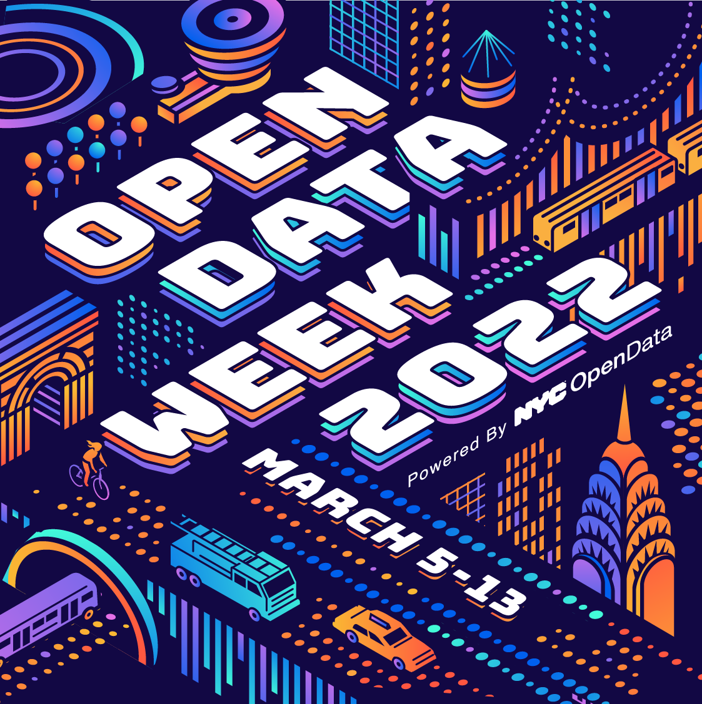
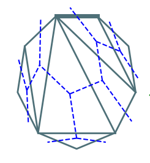
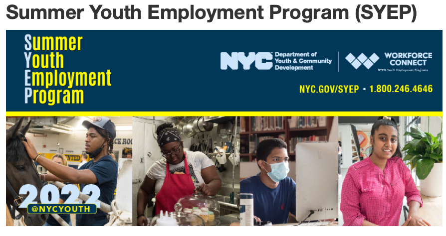
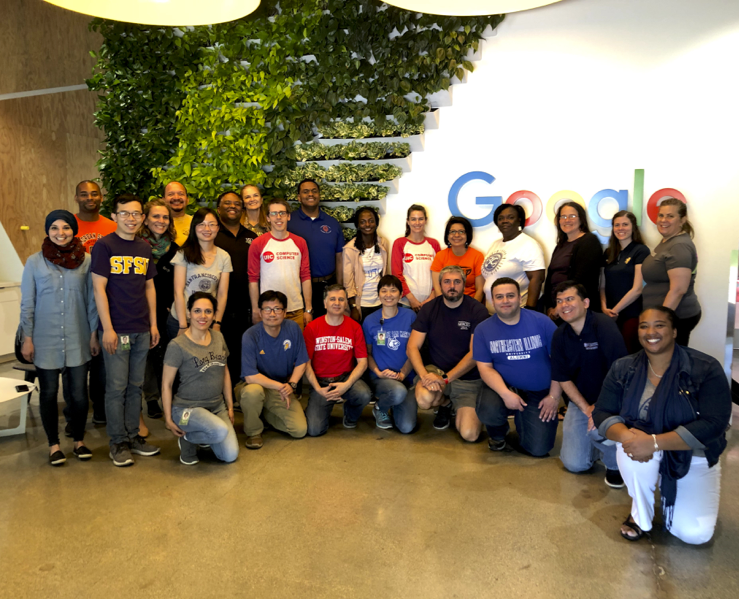
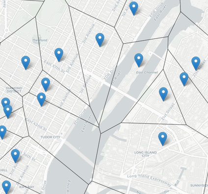
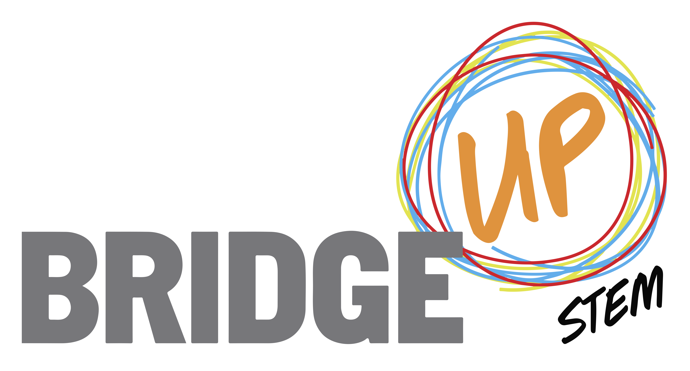

Recent Service & Outreach
|  | Hunter College OpenData Hands-On Workshop, NYC OpenData Week, Organizer, March 2022.
This workshop is an introduction to the Python tools to analyze data, focusing on data sets from NYC OpenData project. Open Data Week is a series of community events focused on the open data effort in New York City, organized by the NYC Office of Technology & Innovation. |
|
|  | Research Experience For Undergraduates, Department of Computer Science, Hunter College, Summer 2021. Funded by the CUNY RecoveryCorps program, this 6-week research program focused on open problems in graph and tree algorithms. Students developed algorithms and code to analyze, compare, and visual ordered trees. The resulting code is publicly available at: github.com/treespaceNYC/orderedTrees. |
|
|  | Computer Science Site Director, CUNY RecoveryCorps, Hunter College, Summer 2021. Part of the NYC Department of Youth and Community Development's Summer Youth Employment Program, the CUNY RecoveryCorps Program at Hunter College placed 450 students in paid summer internships and jobs. Working with Elise Harris, we placed and oversaw 50 computer science students in technical internships and research assistantships both on and off campus. |
|
 |
Department of Computer Science, Hunter College, Interim Chair, Spring 2021. Responsible for day-to-day running of the department, course scheduling, faculty evaluation, and supervising department staff. |
|
 |
Exploratory Research Workshop: Autonomous Navigation (Google exploreCSR grant), Co-Principal Investigator, Winter 2020.
A four-day, hands-on workshop to introduce challenges in autonomous navigation with Duckietown. Duckietown is a colorful, realistic, internationally used platform that makes research issues in autonomous driving accessible. Although an irresistible rubber duckie perches on each car, its navigation is controlled by an onboard raspberry-Pi. Cars are expected to obey traffic signals, stay (roughly) in lane, and read posted QR-code signs. |
|
 |
MfA Workshop: Python in the City, Facilitator, Fall 2019.
Offered via the MfA professional development series for master teachers of math and science in New York City. This mini-course is organized into three sessions, each focused on a challenge, that introduces intermediate programming concepts using the Python programming language and popular packages that allow the analysis of structured data and the visualization via graphs and HTML navigable maps. |
|
 |
Tech Interview Workshop Series, Facilitator, Fall 2019.
Sponsored by the Women In Computer Science Club at Hunter College. Open to all students who wish to practice problem solving (found in programming & algorithms courses and technical interviews), this workshop series meets most Wednesday mornings. To learn more and get involved with the Women in Computer Science club, write hunterwics@gmail.com. |
|
|  | Faculty-in-Residence, Google Mountain View, June 2019.
Faculty-in-Residence (FIR) is an immersive professional development program that engages CS faculty serving underrepresented populations in tech. The focus is on industry-informed, applied learning projects. The goal is to help faculty to better prepare students for jobs in the tech industry. |
|
|  | Hunter College OpenData Showcase, OpenData Week Workshop, Organizer, March 2018.
This workshop was an introduction to the Python tools to analyze data, focusing on data sets from NYC OpenData project. Open Data Week is a series of community events focused on the open data effort in New York City, organized by the Mayor's Office of Data Analytics. |
|
|  | BridgeUp:STEM, Associate Academic Director, 2015-2017.
Generously funded by the Helen Gurley Brown Trust, the BridgeUp:STEM program at the American Museum of Natural History seeks to increase involvement in the intersection of computer science and science via a annual hackathon, a post-baccalaurate fellowship, an multi-year academic and internship program for high school girls, and professional and curriculum development. The latter included curriculum at incorporated computing from middle school earth sciences to doctoral coursework in comparative biology. |
|